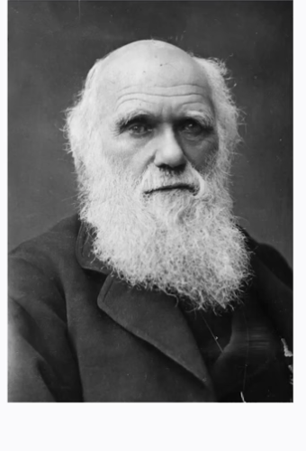

LIVING FILES THEORY
v5 · keynote style
From static notes to adaptive memory systems

Evolution as the operating metaphor
Useful memory systems improve like living organisms: keep what works, prune what doesn’t, and adapt quickly under changing context.
Context Engineering Map
Readable-at-distance labels
Instructions
Long-term memory
Short-term state
RAG retrieval
User prompt
Tools + output